<title>Heir Mood Boards</title>
<meta name="claude:viewport-fit-sides" content="cover">
<link rel="preconnect" href="https://fonts.googleapis.com">
<link rel="stylesheet" href="https://fonts.googleapis.com/css2?family=Cormorant+Garamond:ital,wght@0,500;0,600;1,500&family=Figtree:wght@400;500;600;700&family=IBM+Plex+Mono:wght@400;500&display=swap">
<style>
/* Layout: a museum catalogue. A painted hero, then three boards, each an intro spread followed by a gallery wall of labelled works. */
:root {
  --bg: #ECEAE4; --surface: #F7F6F2; --ink: #1E2326; --muted: #556066; --rule: #CDCAC0; --accent: #2F5B9A; --gold: #9A6B12;
  --display: "Cormorant Garamond", "Iowan Old Style", Georgia, serif; --body: "Figtree", system-ui, sans-serif; --mono: "IBM Plex Mono", ui-monospace, monospace;
}
@media (prefers-color-scheme: dark) { :root:not([data-theme="light"]) { --bg: #15191B; --surface: #1D2225; --ink: #E7E4DC; --muted: #A3ADB1; --rule: #343B3F; --accent: #8FB0E3; --gold: #E0B45C; color-scheme: dark; } }
:root[data-theme="dark"] { --bg: #15191B; --surface: #1D2225; --ink: #E7E4DC; --muted: #A3ADB1; --rule: #343B3F; --accent: #8FB0E3; --gold: #E0B45C; color-scheme: dark; }
* { box-sizing: border-box; }
body { background: var(--bg); color: var(--ink); font-family: var(--body); font-size: 16px; line-height: 1.55; }
a { color: var(--accent); }
a:focus-visible { outline: 2px solid var(--accent); outline-offset: 3px; }
.wrap { max-width: 1180px; margin: 0 auto; padding-left: max(16px, env(safe-area-inset-left, 0px)); padding-right: max(16px, env(safe-area-inset-right, 0px)); }
.hero { position: relative; min-height: 440px; display: flex; align-items: flex-end; background: #6E7891 url("img/w03.jpg") center/cover no-repeat; color: #F7F6F2; }
.hero::after { content: ""; position: absolute; inset: 0; background: linear-gradient(180deg, rgba(20,24,30,0) 25%, rgba(20,24,30,.62) 100%); }
.hero .wrap { position: relative; z-index: 1; padding-block: 56px 40px; width: 100%; }
.hero h1 { font-family: var(--display); font-weight: 500; font-size: clamp(44px, 8vw, 96px); line-height: .95; margin: 0 0 14px; text-wrap: balance; letter-spacing: -.5px; }
.hero p { max-width: 62ch; margin: 0; font-size: 18px; color: #EDEBE4; }
.eyebrow { font-family: var(--mono); font-size: 12px; letter-spacing: 1.2px; text-transform: uppercase; color: var(--muted); margin: 0 0 8px; }
.hero .eyebrow { color: #DAD8D0; }
main section { padding-block: 56px; border-bottom: 1px solid var(--rule); }
h2 { font-family: var(--display); font-weight: 500; font-size: clamp(38px, 6vw, 64px); line-height: 1; margin: 0 0 12px; text-wrap: balance; }
h3 { font-size: 15px; font-weight: 700; margin: 18px 0 6px; }
p, li { max-width: 68ch; }
.pov { display: grid; grid-template-columns: repeat(auto-fit, minmax(min(100%, 320px), 1fr)); gap: 28px 48px; }
.pov p { margin: 0 0 12px; }
.lead { font-family: var(--display); font-size: 28px; line-height: 1.25; margin: 0; text-wrap: balance; }
blockquote { font-family: var(--display); font-style: italic; font-size: 24px; line-height: 1.3; margin: 0; max-width: 40ch; color: var(--ink); }
blockquote cite { display: block; font-family: var(--mono); font-style: normal; font-size: 12px; letter-spacing: 1px; color: var(--muted); margin-top: 6px; text-transform: uppercase; }
.bintro { display: grid; grid-template-columns: repeat(auto-fit, minmax(min(100%, 320px), 1fr)); gap: 8px 48px; margin: 24px 0 32px; }
.bintro p { margin: 0; }
.uses { padding-left: 18px; margin: 0; display: grid; gap: 6px; }
.swatches { list-style: none; padding: 0; margin: 4px 0 0; display: grid; grid-template-columns: repeat(auto-fill, minmax(150px, 1fr)); gap: 8px 16px; }
.swatches li { display: grid; grid-template-columns: 28px 1fr; grid-template-rows: auto auto; column-gap: 10px; align-items: center; font-size: 14px; }
.swatches .chip { grid-row: span 2; width: 28px; height: 28px; border-radius: 50%; border: 1px solid var(--rule); }
.swatches code { font-family: var(--mono); font-size: 12px; color: var(--muted); }
.grid { columns: 3 300px; column-gap: 20px; }
.card { break-inside: avoid; margin: 0 0 20px; background: var(--surface); border: 1px solid var(--rule); border-radius: 4px; overflow: hidden; }
.card img { display: block; width: 100%; height: auto; }
.card figcaption { padding: 14px 16px 16px; display: grid; gap: 10px; }
.card p { margin: 0; font-size: 15px; }
.lbl { display: grid; gap: 1px; padding-bottom: 10px; border-bottom: 1px solid var(--rule); }
.lbl .t { font-family: var(--display); font-size: 20px; font-weight: 600; line-height: 1.15; }
.lbl .a { font-size: 14px; }
.lbl .m { font-family: var(--mono); font-size: 12px; color: var(--muted); }
.why b, .use b { font-family: var(--mono); font-size: 11px; letter-spacing: 1px; text-transform: uppercase; color: var(--gold); margin-right: 6px; font-weight: 500; }
.exgrid { display: grid; grid-template-columns: repeat(auto-fit, minmax(min(100%, 300px), 1fr)); gap: 20px; margin-top: 24px; }
.ex { background: var(--surface); border: 1px solid var(--rule); border-radius: 4px; padding: 18px 20px; min-width: 0; }
.ex h3 { font-family: var(--display); font-size: 26px; font-weight: 600; margin: 0 0 8px; line-height: 1.1; }
.ex p { margin: 0 0 10px; font-size: 15px; }
.ex .src { font-size: 13px; color: var(--muted); margin: 0; }
.toc { display: flex; flex-wrap: wrap; gap: 8px 20px; margin-top: 24px; padding: 0; list-style: none; font-family: var(--mono); font-size: 13px; }
.toc a { color: #F7F6F2; }
.qs { padding-left: 20px; display: grid; gap: 8px; }
footer { padding-block: 40px 64px; color: var(--muted); font-size: 14px; }
@media (prefers-reduced-motion: no-preference) { .hero { animation: drift 60s ease-in-out infinite alternate; } @keyframes drift { from { background-position: 40% 50%; } to { background-position: 60% 50%; } } }
.lbl .t { font-size: 18px; }
.proto { display: flex; flex-wrap: wrap; gap: 16px 32px; align-items: center; justify-content: space-between; background: var(--surface); border: 1px solid var(--rule); border-radius: 4px; padding: 20px 22px; margin-top: 28px; }
.proto p { margin: 0; }
.proto a.btn { display: inline-flex; align-items: center; height: 44px; padding: 0 18px; border-radius: 22px; background: var(--ink); color: var(--bg); text-decoration: none; font-weight: 700; }
</style>
<header class="hero">
  <div class="wrap">
    <p class="eyebrow">Heir · creative direction · photography edition</p>
    <h1>Heir</h1>
    <p>Heirs to the kingdom. Three mood boards for a family Scripture and catechism memory app, now in photography: still water through the day, clay and stone, and light through glass. Thirty-eight photographs, each with a note on why it is here and where it would show up.</p>
    <ul class="toc"><li><a href="#direction">Direction</a></li><li><a href="#day">A day of backgrounds</a></li><li><a href="#still-water">I · Still Water</a></li><li><a href="#potters-clay">II · Potter’s Clay</a></li><li><a href="#living-stones">III · Living Stones</a></li><li><a href="#references">Your references</a></li><li><a href="#ux">UX examples</a></li><li><a href="#game">Levels and points</a></li></ul>
  </div>
</header>
<main class="wrap">
  <section id="direction">
    <p class="eyebrow">The point of view</p>
    <h2>A place that changes with your day</h2>
    <div class="pov">
      <p class="lead">Heir should feel like a place you return to: a lake at first light, the same lake under the stars, a potter’s table, a window with the sun behind it.</p>
      <div>
        <p>Each board is one register of the app. <b>Still Water</b> is the daily practice and the living backgrounds. <b>Potter’s Clay</b> is the family and the children. <b>Living Stones</b> is mastery: the six stone levels and the moment one is reached.</p>
        <p>The bold move is the background. It is a real photograph that drifts slowly the whole time and follows the time of day where you are: dawn, day, dusk and a properly dark night for the bedtime review. Everything in front of it stays still and plain, on frosted glass cards.</p>
        <p>Every photo is from Wikimedia Commons under a Creative Commons license and is credited by name. Before launch, each one needs to be either credited in the app or replaced with photography Heir owns.</p>
      </div>
    </div>
    <div class="proto"><p><b>See it move.</b> A working Heir lesson screen with the drifting, time-of-day background.</p><a class="btn" href="https://claude.ai/artifact/4U643DuNLZ3SbbffVg7ox8" target="_blank" rel="noopener">Open the prototype</a></div>
  </section>
  <section id="day">
    <p class="eyebrow">The living background</p>
    <h2>A day of backgrounds</h2>
    <p>The app picks one by the clock, crossfades over two and a half seconds when the hour turns, and drifts each one slowly. Reduced motion holds them still.</p>
    <div class="exgrid"><figure class="card">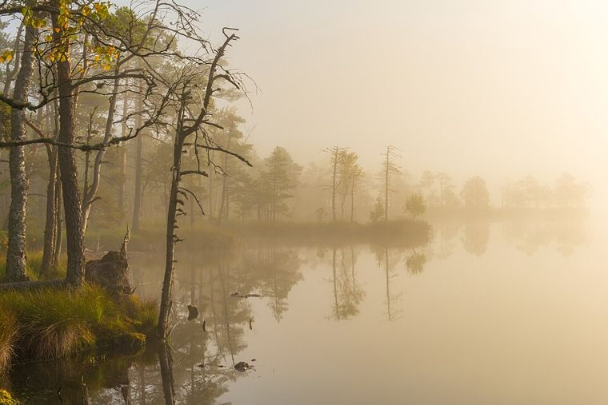<figcaption><p class="lbl"><span class="t">Dawn</span><span class="m">05:00–09:00</span></p><p class="use">Mist on still water, gold light. New pieces are offered in the morning.</p></figcaption></figure><figure class="card">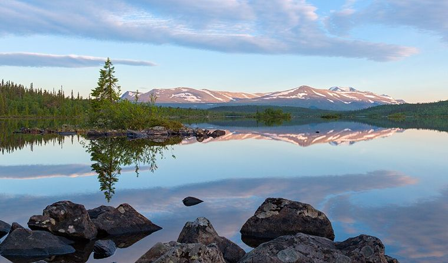<figcaption><p class="lbl"><span class="t">Day</span><span class="m">09:00–17:00</span></p><p class="use">The clearest scene: blue sky mirrored in a lake, so the card reads best.</p></figcaption></figure><figure class="card">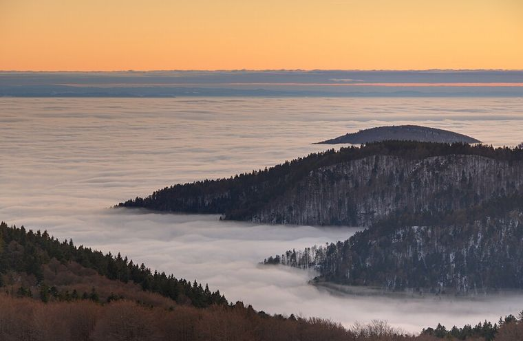<figcaption><p class="lbl"><span class="t">Dusk</span><span class="m">17:00–20:00</span></p><p class="use">A sea of fog under a band of gold. Evening practice, shorter.</p></figcaption></figure><figure class="card">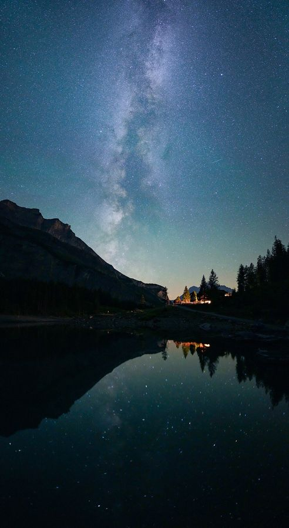<figcaption><p class="lbl"><span class="t">Night</span><span class="m">20:00–05:00</span></p><p class="use">Stars over a dark lake, a dark glass card, and only the bedtime review.</p></figcaption></figure></div>
  </section>
  <section class="board" id="still-water"><header class="bhead"><p class="eyebrow">Board I · Practice, review, and the time-of-day backgrounds · 13 photographs</p><h2>Still Water</h2><blockquote>“He leads me beside still waters. He restores my soul.” <cite>Psalm 23:2–3</cite></blockquote></header>
<div class="bintro"><div><h3>The idea</h3><p>This is where the daily work happens, and it carries the living backgrounds: the same lake seen at dawn, in full day, at dusk and under the stars. Every photo is mostly sky, mist or water, with a narrow range of tones, so a glass card can sit on top and stay readable.</p><h3>How the photos were chosen</h3><p>I kept photographs with large open areas of sky, fog or water, little detail where the card sits, and some quality that can move slowly: fog that drifts, a surface that ripples, stars that turn. Each time of day needed a clear candidate, so the set runs from first light to night.</p></div><div><h3>Where it shows up in the app</h3><ul class="uses"><li>The four time-of-day backgrounds (dawn, day, dusk, night), each drifting slowly over about a minute.</li><li>Ripples and moving light as answer feedback: rings spread from the word you tapped.</li><li>Night is properly dark: stars over black water, with the card turning to dark glass.</li></ul><h3>Palette, taken from the photos</h3><ul class="swatches"><li><span class="chip" style="background:#D9B97A"></span><span>Dawn gold</span><code>#D9B97A</code></li><li><span class="chip" style="background:#C9CCC8"></span><span>Fog</span><code>#C9CCC8</code></li><li><span class="chip" style="background:#6E96BF"></span><span>Lake blue</span><code>#6E96BF</code></li><li><span class="chip" style="background:#3E4E55"></span><span>Slate</span><code>#3E4E55</code></li><li><span class="chip" style="background:#121A26"></span><span>Night</span><code>#121A26</code></li><li><span class="chip" style="background:#E9E6DE"></span><span>Star</span><code>#E9E6DE</code></li></ul></div></div>
<div class="grid"><figure class="card"><a href="https://commons.wikimedia.org/wiki/File:Hommikune_udu_Kakerdaja_rabas.jpg" target="_blank" rel="noopener"></a><figcaption><p class="lbl"><span class="t">Hommikune udu Kakerdaja rabas</span><span class="a">Photo: Abrget47j</span><span class="m">CC BY-SA 3.0 · Wikimedia Commons</span></p><p class="why"><b>Why</b> Golden fog, bare trees and a perfectly still reflection.</p><p class="use"><b>Use</b> The dawn background. New pieces are offered at this hour.</p></figcaption></figure><figure class="card"><a href="https://commons.wikimedia.org/wiki/File:Stuor_D%C3%A1ht%C3%A1_lake_along_the_Kungsleden_trail_during_golden_hour_in_Kvikkjokk-Kabla_fj%C3%A4llurskog_(DSCF2557).jpg" target="_blank" rel="noopener"></a><figcaption><p class="lbl"><span class="t">Stuor Dáhtá lake along the Kungsleden trail during golden hour in Kvikkjokk-Kabla fjällurskog (DSCF2557)</span><span class="a">Photo: Trougnouf (Benoit Brummer)</span><span class="m">CC BY 4.0 · Wikimedia Commons</span></p><p class="why"><b>Why</b> Blue sky mirrored in a calm lake, with rocks in the foreground. The clearest image here.</p><p class="use"><b>Use</b> The day background, chosen for the most readable card.</p></figcaption></figure><figure class="card"><a href="https://commons.wikimedia.org/wiki/File:Vallee-brouillard.jpg" target="_blank" rel="noopener"></a><figcaption><p class="lbl"><span class="t">Vallee-brouillard</span><span class="a">Photo: Thomas Bresson</span><span class="m">CC BY 3.0 · Wikimedia Commons</span></p><p class="why"><b>Why</b> A sea of fog under a band of gold, with dark ridges rising out of it.</p><p class="use"><b>Use</b> The dusk background. The gold band holds “Bedtime review at 8:00.”</p></figcaption></figure><figure class="card"><a href="https://commons.wikimedia.org/wiki/File:036_Milky_Way_during_Perseids_seen_from_Oeschinensee_with_water_reflections_Photo_by_Giles_Laurent.jpg" target="_blank" rel="noopener"></a><figcaption><p class="lbl"><span class="t">036 Milky Way during Perseids seen from Oeschinensee with water reflections Photo by Giles Laurent</span><span class="a">Photo: Giles Laurent</span><span class="m">CC BY-SA 4.0 · Wikimedia Commons</span></p><p class="why"><b>Why</b> The Milky Way over a mountain lake, reflected in the water. Already shaped like a phone.</p><p class="use"><b>Use</b> The night background for the bedtime review.</p></figcaption></figure><figure class="card"><a href="https://commons.wikimedia.org/wiki/File:Bontecou_Lake_Milky_Way_panorama.jpg" target="_blank" rel="noopener">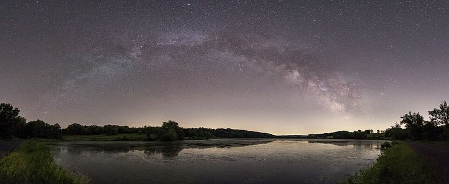</a><figcaption><p class="lbl"><span class="t">Bontecou Lake Milky Way panorama</span><span class="a">Photo: Juliancolton</span><span class="m">CC BY-SA 4.0 · Wikimedia Commons</span></p><p class="why"><b>Why</b> An arc of stars over a dark lake, wide and quiet.</p><p class="use"><b>Use</b> Night on a tablet or in landscape. Also the art for Amethyst, the level about keeping something for months (Abraham’s stars, Genesis 15:5).</p></figcaption></figure><figure class="card"><a href="https://commons.wikimedia.org/wiki/File:Fog_around_Lake_Heron,_Taylor_Range,_Canterbury,_New_Zealand.jpg" target="_blank" rel="noopener">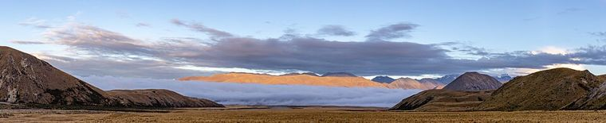</a><figcaption><p class="lbl"><span class="t">Fog around Lake Heron, Taylor Range, Canterbury, New Zealand</span><span class="a">Photo: Michal Klajban</span><span class="m">CC BY-SA 4.0 · Wikimedia Commons</span></p><p class="why"><b>Why</b> A thin band of land between fog and sky, very wide.</p><p class="use"><b>Use</b> The library header. A panorama drifts sideways naturally.</p></figcaption></figure><figure class="card"><a href="https://commons.wikimedia.org/wiki/File:Foggy_morning_at_Lake_Merced.jpg" target="_blank" rel="noopener">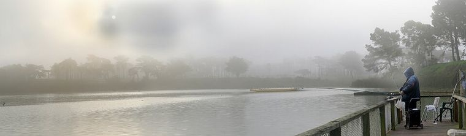</a><figcaption><p class="lbl"><span class="t">Foggy morning at Lake Merced</span><span class="a">Photo: Brocken Inaglory</span><span class="m">CC BY-SA 3.0 · Wikimedia Commons</span></p><p class="why"><b>Why</b> Fog erasing the far shore, and one person at the end of a pier.</p><p class="use"><b>Use</b> Morning review. The lone figure stands for one person’s quiet time (most uses crop to the fog).</p></figcaption></figure><figure class="card"><a href="https://commons.wikimedia.org/wiki/File:Lake_Clearwater,_Canterbury,_New_Zealand_02.jpg" target="_blank" rel="noopener">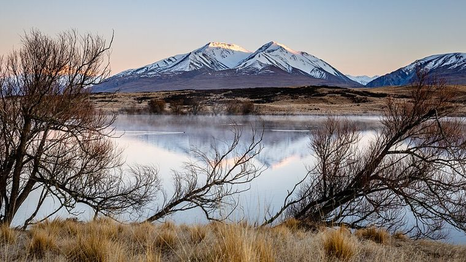</a><figcaption><p class="lbl"><span class="t">Lake Clearwater, Canterbury, New Zealand 02</span><span class="a">Photo: Michal Klajban</span><span class="m">CC BY-SA 4.0 · Wikimedia Commons</span></p><p class="why"><b>Why</b> Snowy peaks reflected exactly in still water, in early pink light.</p><p class="use"><b>Use</b> The Emerald level, which works both ways: the reflection is reference to verse and verse to reference.</p></figcaption></figure><figure class="card"><a href="https://commons.wikimedia.org/wiki/File:Friars%27_Crag_Derwentwater_Lake_District_2022_01.jpg" target="_blank" rel="noopener">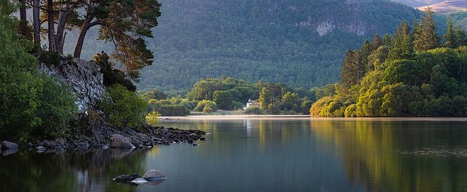</a><figcaption><p class="lbl"><span class="t">Friars&#x27; Crag Derwentwater Lake District 2022 01</span><span class="a">Photo: Julian Herzog (Website)</span><span class="m">CC BY 4.0 · Wikimedia Commons</span></p><p class="why"><b>Why</b> A calm green lake under a bright sky, with a wooded crag.</p><p class="use"><b>Use</b> A greener daytime scene for the family home.</p></figcaption></figure><figure class="card"><a href="https://commons.wikimedia.org/wiki/File:Evening_on_Kathleen_Lake.jpg" target="_blank" rel="noopener">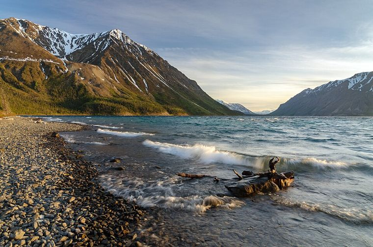</a><figcaption><p class="lbl"><span class="t">Evening on Kathleen Lake</span><span class="a">Photo: Jakub Fryš</span><span class="m">CC BY-SA 4.0 · Wikimedia Commons</span></p><p class="why"><b>Why</b> Small waves and mountains in cool evening light.</p><p class="use"><b>Use</b> The late afternoon, between day and dusk.</p></figcaption></figure><figure class="card"><a href="https://commons.wikimedia.org/wiki/File:Black_alder_twig_and_water_ripples_at_Wolfsberger_M%C3%BChle,_2019-06-29.jpg" target="_blank" rel="noopener">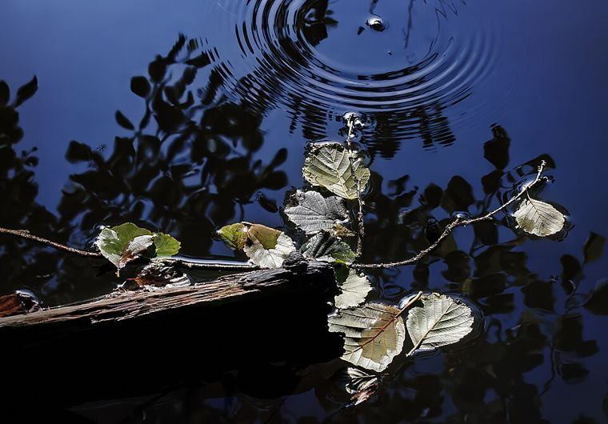</a><figcaption><p class="lbl"><span class="t">Black alder twig and water ripples at Wolfsberger Mühle, 2019-06-29</span><span class="a">Photo: Radomianin</span><span class="m">CC BY-SA 4.0 · Wikimedia Commons</span></p><p class="why"><b>Why</b> Ripple rings on dark blue water around a single twig.</p><p class="use"><b>Use</b> Answer feedback: rings spread out from the word you tapped.</p></figcaption></figure><figure class="card"><a href="https://commons.wikimedia.org/wiki/File:Ripples_dispersing_sunlight_into_underwater_rainbows_in_Brofjorden.jpg" target="_blank" rel="noopener">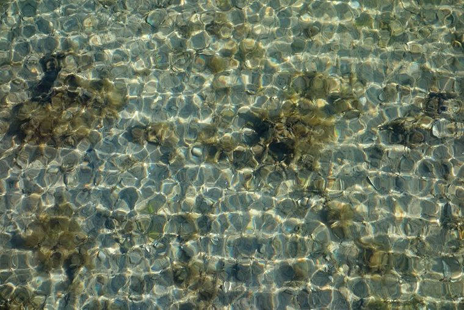</a><figcaption><p class="lbl"><span class="t">Ripples dispersing sunlight into underwater rainbows in Brofjorden</span><span class="a">Photo: W.carter</span><span class="m">CC BY-SA 4.0 · Wikimedia Commons</span></p><p class="why"><b>Why</b> Sunlight refracted into moving lines of light on the stones under the water.</p><p class="use"><b>Use</b> A two-second shimmer behind the card for a perfect recall.</p></figcaption></figure><figure class="card"><a href="https://commons.wikimedia.org/wiki/File:Rain_on_a_window.jpg" target="_blank" rel="noopener">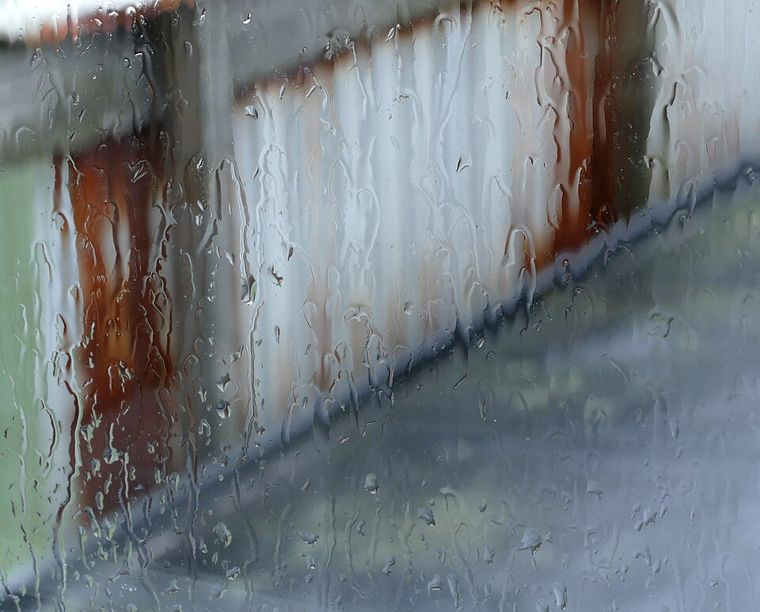</a><figcaption><p class="lbl"><span class="t">Rain on a window</span><span class="a">Photo: W.carter</span><span class="m">CC BY-SA 4.0 · Wikimedia Commons</span></p><p class="why"><b>Why</b> Rain running down a window, with everything behind it soft.</p><p class="use"><b>Use</b> Onboarding and rainy-day texture: reading through glass, attention turned inward.</p></figcaption></figure></div></section><section class="board" id="potters-clay"><header class="bhead"><p class="eyebrow">Board II · Family, children and the plan · 13 photographs</p><h2>Potter’s Clay</h2><blockquote>“We are the clay, and you are our potter; we are all the work of your hand.” <cite>Isaiah 64:8</cite></blockquote></header>
<div class="bintro"><div><h3>The idea</h3><p>Memorizing as a family is handmade work: patient, a little imperfect, done together over months. This board is clay on the wheel, glaze, sandstone shaped by water, and ridges fading into haze. It is the warm register of the app, for the family home, the children’s track and the planner.</p><h3>How the photos were chosen</h3><p>I looked for hands at work, surfaces you want to touch (glaze, ribbed tile, sand), stone shaped slowly by water and wind, and mountains in layers that read as a journey. Nothing glossy or staged.</p></div><div><h3>Where it shows up in the app</h3><ul class="uses"><li>Family home and planner: layered peaks as the path toward a goal, one ridge per section.</li><li>The children’s track: warm terracotta and glaze colors, one per item.</li><li>Honest states: dry, cracked earth for an item that needs a refresh, smoothing again after a good review.</li></ul><h3>Palette, taken from the photos</h3><ul class="swatches"><li><span class="chip" style="background:#B5562E"></span><span>Terracotta</span><code>#B5562E</code></li><li><span class="chip" style="background:#C9783D"></span><span>Canyon</span><code>#C9783D</code></li><li><span class="chip" style="background:#D9B48A"></span><span>Sand</span><code>#D9B48A</code></li><li><span class="chip" style="background:#3D6A8E"></span><span>Glaze blue</span><code>#3D6A8E</code></li><li><span class="chip" style="background:#8C8279"></span><span>Clay grey</span><code>#8C8279</code></li><li><span class="chip" style="background:#C8A55A"></span><span>Field gold</span><code>#C8A55A</code></li></ul></div></div>
<div class="grid"><figure class="card"><a href="https://commons.wikimedia.org/wiki/File:Potter_at_work,_Jaura,_India.jpg" target="_blank" rel="noopener">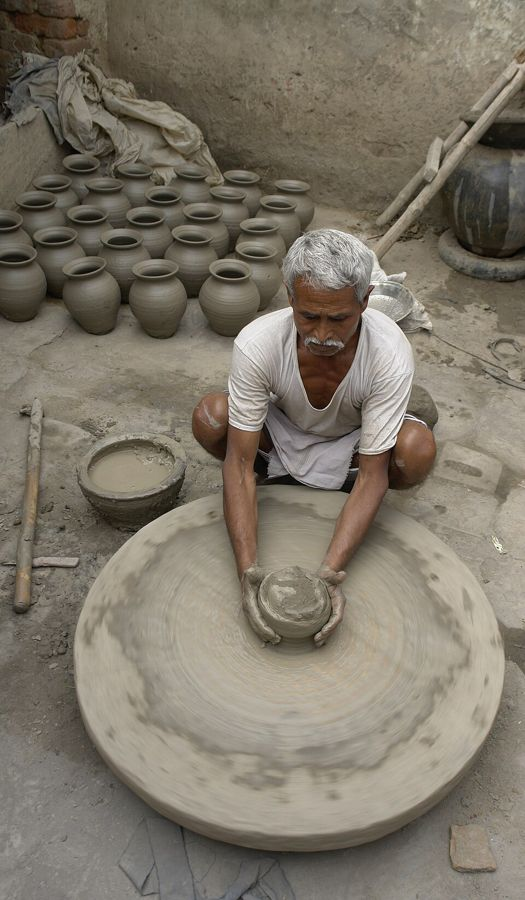</a><figcaption><p class="lbl"><span class="t">Potter at work, Jaura, India</span><span class="a">Photo: Yann (talk)</span><span class="m">CC BY-SA 4.0 · Wikimedia Commons</span></p><p class="why"><b>Why</b> A potter’s hands centering clay on a wheel, surrounded by finished pots.</p><p class="use"><b>Use</b> Onboarding and the planner: “we are the clay.” Shaping happens slowly, by hand.</p></figcaption></figure><figure class="card"><a href="https://commons.wikimedia.org/wiki/File:Play_with_a_wheel.jpg" target="_blank" rel="noopener">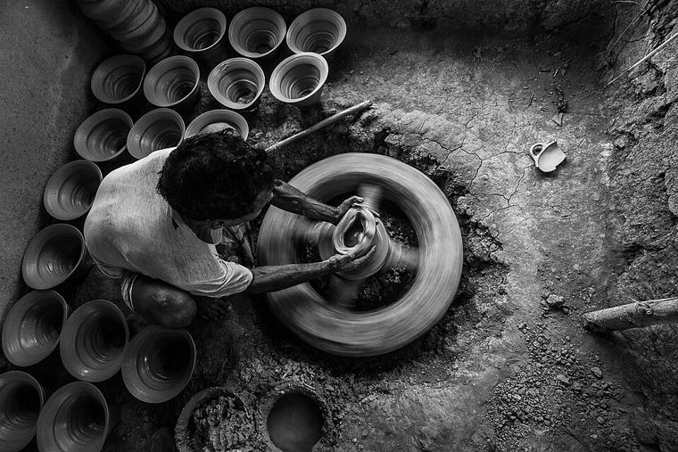</a><figcaption><p class="lbl"><span class="t">Play with a wheel</span><span class="a">Photo: Arjit Chowdhury</span><span class="m">CC BY-SA 4.0 · Wikimedia Commons</span></p><p class="why"><b>Why</b> The wheel from above, in black and white, with pots in rings around it.</p><p class="use"><b>Use</b> A circular progress dial borrowed from the wheel. Black and white for setting up a child’s profile.</p></figcaption></figure><figure class="card"><a href="https://commons.wikimedia.org/wiki/File:Tajines_in_a_pottery_shop_in_Morocco.jpg" target="_blank" rel="noopener">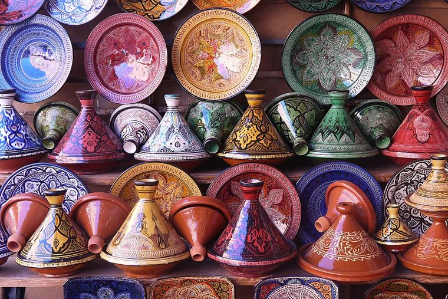</a><figcaption><p class="lbl"><span class="t">Tajines in a pottery shop in Morocco</span><span class="a">Photo: Jafri Ali</span><span class="m">CC BY-SA 4.0 · Wikimedia Commons</span></p><p class="why"><b>Why</b> Shelves of glazed tagine lids, each a different color and pattern.</p><p class="use"><b>Use</b> The library as a collection: each item its own glazed piece. Children’s item colors.</p></figcaption></figure><figure class="card"><a href="https://commons.wikimedia.org/wiki/File:Clay_Pots-BW-IMG_7303.jpg" target="_blank" rel="noopener">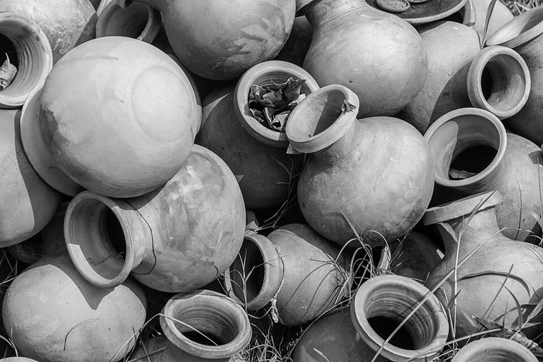</a><figcaption><p class="lbl"><span class="t">Clay Pots-BW-IMG 7303</span><span class="a">Photo: Bijay chaurasia</span><span class="m">CC BY-SA 4.0 · Wikimedia Commons</span></p><p class="why"><b>Why</b> A heap of empty clay pots, mouths open.</p><p class="use"><b>Use</b> Empty state for new items: pieces waiting to be filled.</p></figcaption></figure><figure class="card"><a href="https://commons.wikimedia.org/wiki/File:Roof_tiles_packed_in_crate_1.jpg" target="_blank" rel="noopener">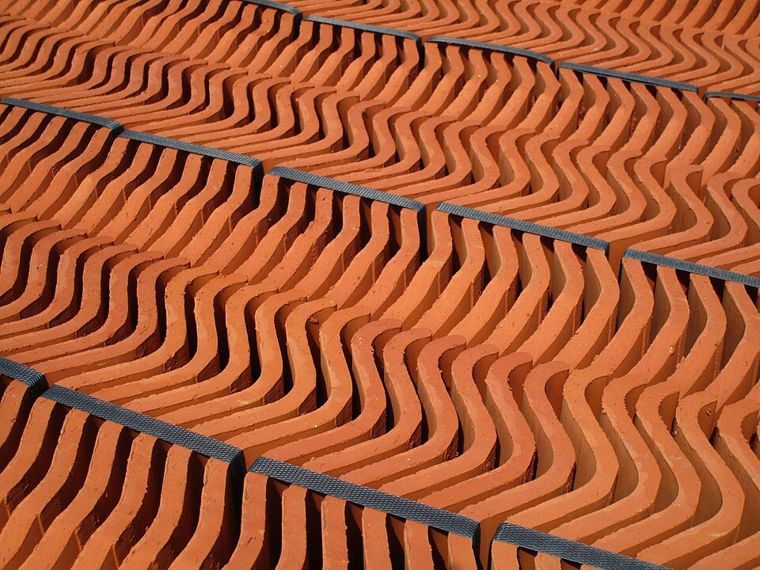</a><figcaption><p class="lbl"><span class="t">Roof tiles packed in crate 1</span><span class="a">Photo: W.carter</span><span class="m">CC BY-SA 4.0 · Wikimedia Commons</span></p><p class="why"><b>Why</b> Rows of terracotta roof tiles in a repeating wave.</p><p class="use"><b>Use</b> Pattern for the children’s lesson background. Rhythm and repetition.</p></figcaption></figure><figure class="card"><a href="https://commons.wikimedia.org/wiki/File:Lower_Antelope_Canyon_November_2018_006.jpg" target="_blank" rel="noopener">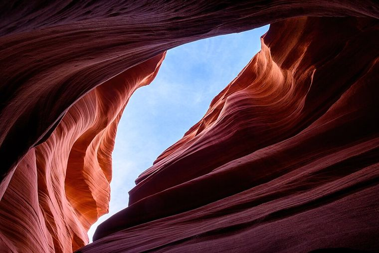</a><figcaption><p class="lbl"><span class="t">Lower Antelope Canyon November 2018 006</span><span class="a">Photo: King of Hearts</span><span class="m">CC BY-SA 4.0 · Wikimedia Commons</span></p><p class="why"><b>Why</b> Red canyon walls opening to a slice of blue sky.</p><p class="use"><b>Use</b> The children’s level-up path. Rock shaped by water over time, as memory is shaped by review.</p></figcaption></figure><figure class="card"><a href="https://commons.wikimedia.org/wiki/File:Upper_Antelope_Canyon_03_2013.jpg" target="_blank" rel="noopener">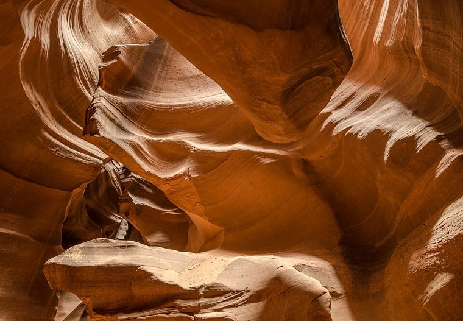</a><figcaption><p class="lbl"><span class="t">Upper Antelope Canyon 03 2013</span><span class="a">Photo: Tuxyso</span><span class="m">CC BY-SA 3.0 · Wikimedia Commons</span></p><p class="why"><b>Why</b> Glowing orange curves of sandstone.</p><p class="use"><b>Use</b> A warm gradient for cards, and the color source for the Topaz level.</p></figcaption></figure><figure class="card"><a href="https://commons.wikimedia.org/wiki/File:Mesquite_Flat_Sand_Dunes_Panorama_Morning_2013.jpg" target="_blank" rel="noopener">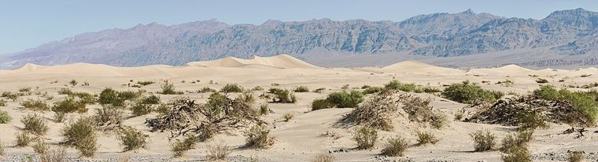</a><figcaption><p class="lbl"><span class="t">Mesquite Flat Sand Dunes Panorama Morning 2013</span><span class="a">Photo: Tuxyso</span><span class="m">CC BY-SA 3.0 · Wikimedia Commons</span></p><p class="why"><b>Why</b> Soft dunes in morning light with mountains behind.</p><p class="use"><b>Use</b> The family home header in the warm register.</p></figcaption></figure><figure class="card"><a href="https://commons.wikimedia.org/wiki/File:Sossusvlei_Dune_Rippled_cropped.jpg" target="_blank" rel="noopener">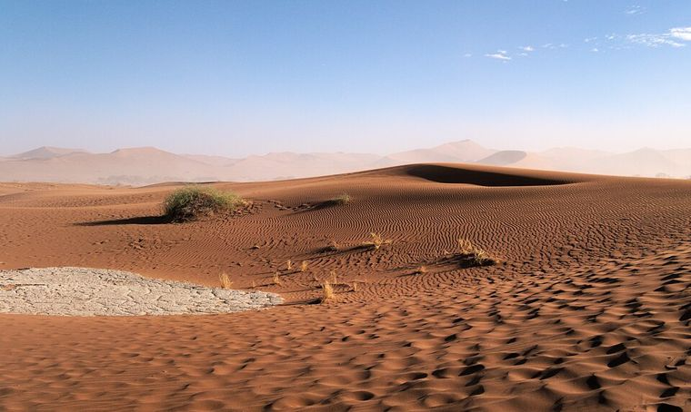</a><figcaption><p class="lbl"><span class="t">Sossusvlei Dune Rippled cropped</span><span class="a">Photo: Daniel Kraft</span><span class="m">CC BY-SA 3.0 · Wikimedia Commons</span></p><p class="why"><b>Why</b> Wind ripples across red sand.</p><p class="use"><b>Use</b> A slow texture behind the planner: each ripple a day.</p></figcaption></figure><figure class="card"><a href="https://commons.wikimedia.org/wiki/File:Campilhas_July_2015-1.jpg" target="_blank" rel="noopener">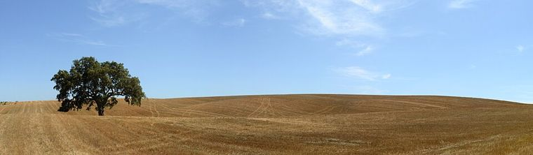</a><figcaption><p class="lbl"><span class="t">Campilhas July 2015-1</span><span class="a">Photo: Alvesgaspar</span><span class="m">CC BY-SA 4.0 · Wikimedia Commons</span></p><p class="why"><b>Why</b> One tree on a golden hill under a wide sky.</p><p class="use"><b>Use</b> The planner’s goal reached: a tree planted by streams of water (Psalm 1:3).</p></figcaption></figure><figure class="card"><a href="https://commons.wikimedia.org/wiki/File:1_zhangjiajie_huangshizhai_wulingyuan_panorama_2012.jpg" target="_blank" rel="noopener">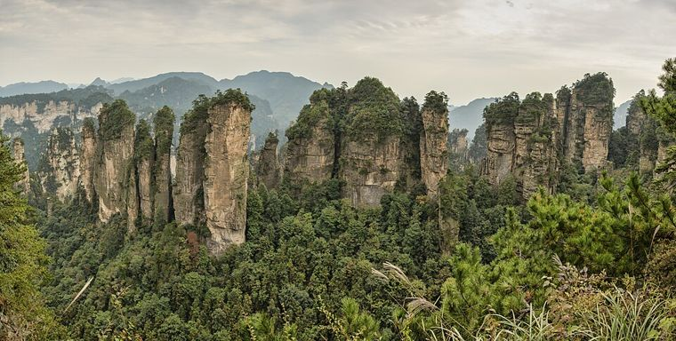</a><figcaption><p class="lbl"><span class="t">1 zhangjiajie huangshizhai wulingyuan panorama 2012</span><span class="a">Photo: chensiyuan</span><span class="m">CC BY-SA 4.0 · Wikimedia Commons</span></p><p class="why"><b>Why</b> Sandstone pillars rising through haze.</p><p class="use"><b>Use</b> A catechism as pillars: each question one pillar, each section a row.</p></figcaption></figure><figure class="card"><a href="https://commons.wikimedia.org/wiki/File:Karst_peaks_with_sea_of_clouds_at_sunrise,_South_view_from_the_top_of_Mount_Nam_Xay,_Vang_Vieng,_Laos.jpg" target="_blank" rel="noopener">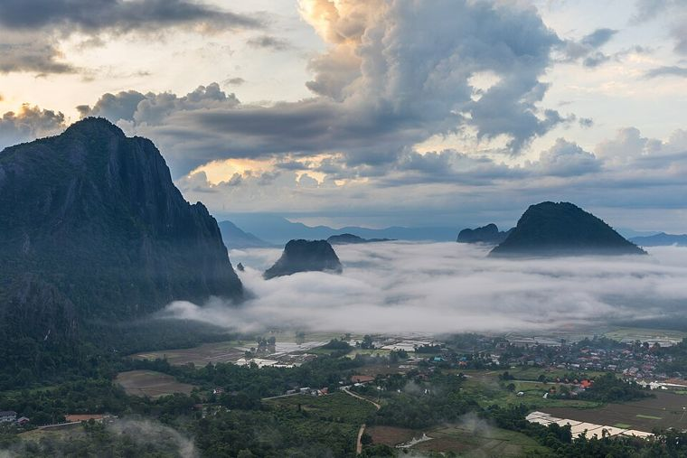</a><figcaption><p class="lbl"><span class="t">Karst peaks with sea of clouds at sunrise, South view from the top of Mount Nam Xay, Vang Vieng, Laos</span><span class="a">Photo: Basile Morin</span><span class="m">CC BY-SA 4.0 · Wikimedia Commons</span></p><p class="why"><b>Why</b> Karst peaks in layers above a sea of morning cloud.</p><p class="use"><b>Use</b> The path for a long goal: peaks receding into the distance.</p></figcaption></figure><figure class="card"><a href="https://commons.wikimedia.org/wiki/File:Drought.jpg" target="_blank" rel="noopener">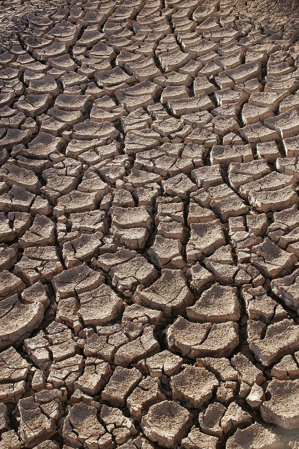</a><figcaption><p class="lbl"><span class="t">Drought</span><span class="a">Photo: Tomas Castelazo</span><span class="m">CC BY 3.0 · Wikimedia Commons</span></p><p class="why"><b>Why</b> Dry, cracked clay.</p><p class="use"><b>Use</b> The “needs a refresh” state, which smooths back over after a good review. Never error-red.</p></figcaption></figure></div></section><section class="board" id="living-stones"><header class="bhead"><p class="eyebrow">Board III · Mastery, levels and reward · 12 photographs</p><h2>Living Stones</h2><blockquote>“You yourselves like living stones are being built up as a spiritual house.” <cite>1 Peter 2:5</cite></blockquote></header>
<div class="bintro"><div><h3>The idea</h3><p>Light through colored glass, and real stones. This is the register for mastery: the six levels named for the foundation stones of Revelation 21, the moment a level is reached, and the treasury of verses kept for good. Stained glass carries the idea well: many small pieces, each held by lead, becoming one picture when light comes through.</p><h3>How the photos were chosen</h3><p>I chose cathedral glass photographed with light behind it, and mineral photographs of the actual stones, so each level color comes from a real specimen rather than a guess. Lead lines and round windows are here because they make a natural grid for interface.</p></div><div><h3>Where it shows up in the app</h3><ul class="uses"><li>Each item wears a round badge, like a rose window, colored by its level’s stone.</li><li>The level-up moment: panes lighting one by one, radiating from the center. Never confetti.</li><li>A treasury of secured verses, shown like crystals in a geode.</li></ul><h3>Palette, taken from the photos</h3><ul class="swatches"><li><span class="chip" style="background:#B9431F"></span><span>Carnelian</span><code>#B9431F</code></li><li><span class="chip" style="background:#D9A441"></span><span>Topaz</span><code>#D9A441</code></li><li><span class="chip" style="background:#2F5B9A"></span><span>Sapphire</span><code>#2F5B9A</code></li><li><span class="chip" style="background:#2E9A6E"></span><span>Emerald</span><code>#2E9A6E</code></li><li><span class="chip" style="background:#7E5BA0"></span><span>Amethyst</span><code>#7E5BA0</code></li><li><span class="chip" style="background:#9E2F22"></span><span>Jasper</span><code>#9E2F22</code></li></ul></div></div>
<div class="grid"><figure class="card"><a href="https://commons.wikimedia.org/wiki/File:Santa_Capilla,_Par%C3%ADs,_Francia,_2022-11-01,_DD_80-82_HDR.jpg" target="_blank" rel="noopener">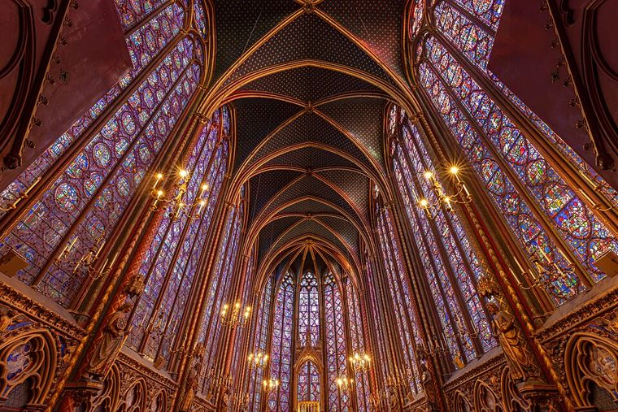</a><figcaption><p class="lbl"><span class="t">Santa Capilla, París, Francia, 2022-11-01, DD 80-82 HDR</span><span class="a">Photo: Diego Delso</span><span class="m">CC BY-SA 4.0 · Wikimedia Commons</span></p><p class="why"><b>Why</b> A chapel whose walls are almost entirely glass, with light everywhere.</p><p class="use"><b>Use</b> The Jasper treasury: the feeling of standing inside the light.</p></figcaption></figure><figure class="card"><a href="https://commons.wikimedia.org/wiki/File:Laon_Cathedral_East_Window,_Picardy,_France_-_Diliff.jpg" target="_blank" rel="noopener">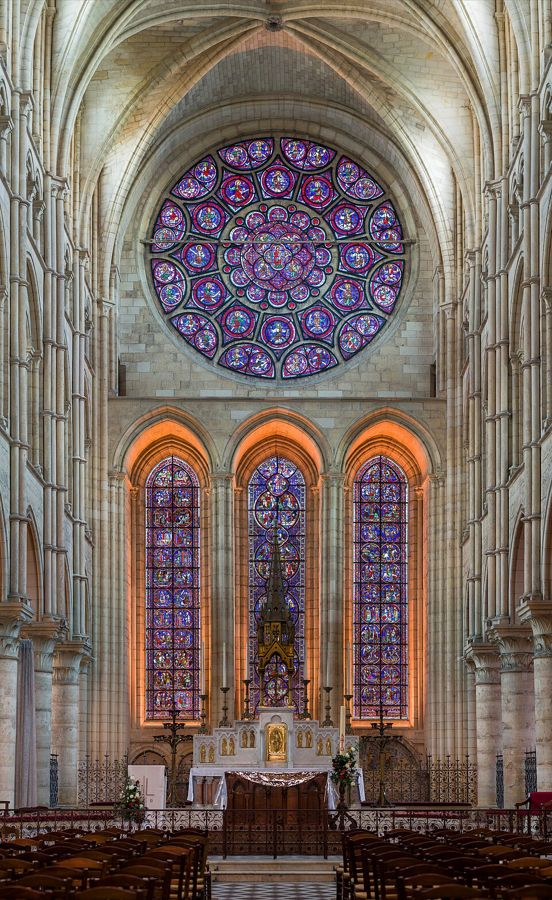</a><figcaption><p class="lbl"><span class="t">Laon Cathedral East Window, Picardy, France - Diliff</span><span class="a">Photo: Diliff</span><span class="m">CC BY-SA 3.0 · Wikimedia Commons</span></p><p class="why"><b>Why</b> A rose window above three tall lancet windows.</p><p class="use"><b>Use</b> The family window: the rose is the family goal, each lancet one person.</p></figcaption></figure><figure class="card"><a href="https://commons.wikimedia.org/wiki/File:D%C3%BClmen,_Heilig-Kreuz-Kirche,_Rosette_--_2022_--_0669_(crop,_kreativ).jpg" target="_blank" rel="noopener">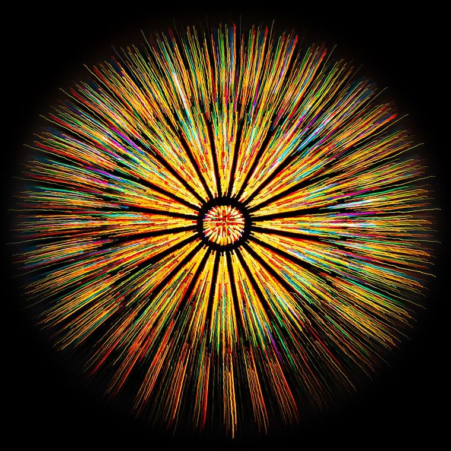</a><figcaption><p class="lbl"><span class="t">Dülmen, Heilig-Kreuz-Kirche, Rosette -- 2022 -- 0669 (crop, kreativ)</span><span class="a">Photo: Dietmar Rabich</span><span class="m">CC BY-SA 4.0 · Wikimedia Commons</span></p><p class="why"><b>Why</b> Amber and gold glass radiating from a center.</p><p class="use"><b>Use</b> The level-up moment: panes light one by one from the center out.</p></figcaption></figure><figure class="card"><a href="https://commons.wikimedia.org/wiki/File:Stained_glass_in_Nysa_cathedral.jpg" target="_blank" rel="noopener">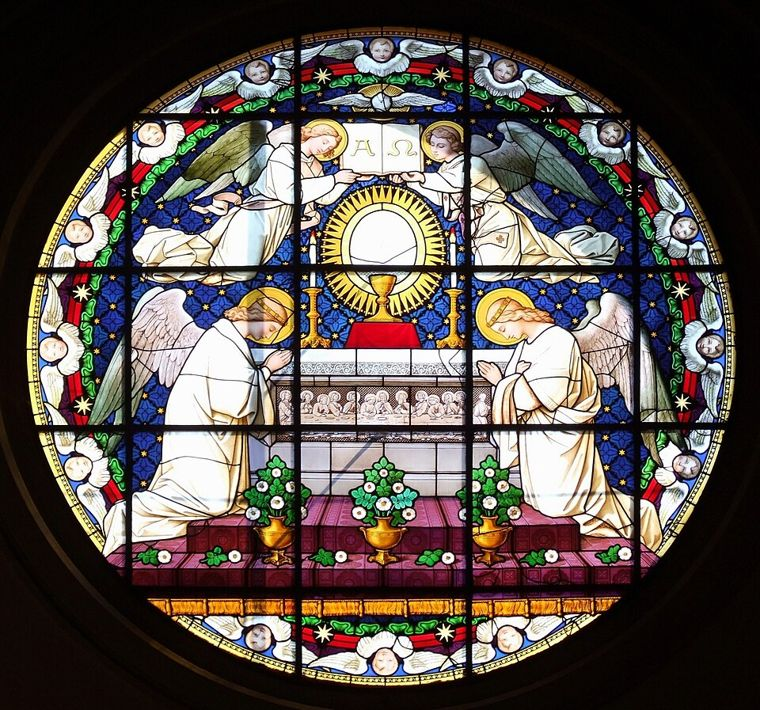</a><figcaption><p class="lbl"><span class="t">Stained glass in Nysa cathedral</span><span class="a">Photo: Pudelek (Marcin Szala)</span><span class="m">CC BY-SA 4.0 · Wikimedia Commons</span></p><p class="why"><b>Why</b> Figures inside a round window, held by a grid of lead.</p><p class="use"><b>Use</b> The badge each item wears: a roundel with lead lines.</p></figcaption></figure><figure class="card"><a href="https://commons.wikimedia.org/wiki/File:St_Vitus_Cathedral_-_Stained_glass_(retouch).jpg" target="_blank" rel="noopener">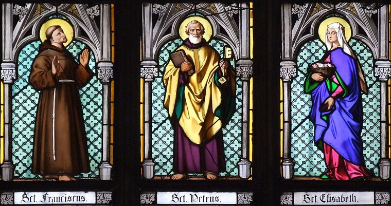</a><figcaption><p class="lbl"><span class="t">St Vitus Cathedral - Stained glass (retouch)</span><span class="a">Photo: Oryg. Pudelek, Mody. Albertus teolog</span><span class="m">CC BY-SA 4.0 · Wikimedia Commons</span></p><p class="why"><b>Why</b> Three saints in three windows, each with a name plate below.</p><p class="use"><b>Use</b> Family profile cards: one window per person, with a name plate.</p></figcaption></figure><figure class="card"><a href="https://commons.wikimedia.org/wiki/File:Carnelian_Agate,_Oregon.jpg" target="_blank" rel="noopener">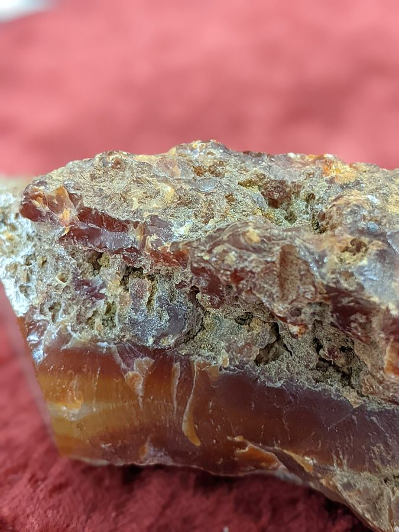</a><figcaption><p class="lbl"><span class="t">Carnelian Agate, Oregon</span><span class="a">Photo: Bobjgalindo</span><span class="m">CC BY-SA 4.0 · Wikimedia Commons</span></p><p class="why"><b>Why</b> Rough, banded orange agate, unpolished.</p><p class="use"><b>Use</b> Carnelian, the first level: the right color, still rough.</p></figcaption></figure><figure class="card"><a href="https://commons.wikimedia.org/wiki/File:Topaz,_Virgem_de_Lapa,_Minas_Gerais,_Brazil-8781.jpg" target="_blank" rel="noopener">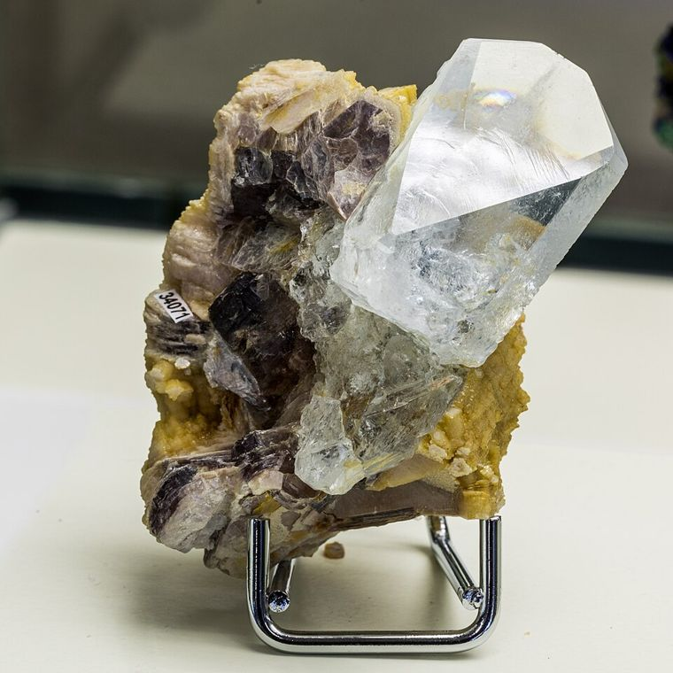</a><figcaption><p class="lbl"><span class="t">Topaz, Virgem de Lapa, Minas Gerais, Brazil-8781</span><span class="a">Photo: Raimond Spekking</span><span class="m">CC BY-SA 4.0 · Wikimedia Commons</span></p><p class="why"><b>Why</b> Clear golden topaz next to quartz.</p><p class="use"><b>Use</b> The Topaz level’s color: pale gold and clear.</p></figcaption></figure><figure class="card"><a href="https://commons.wikimedia.org/wiki/File:(Muzo)_Emerald_crystal_in_its_matrix.jpg" target="_blank" rel="noopener">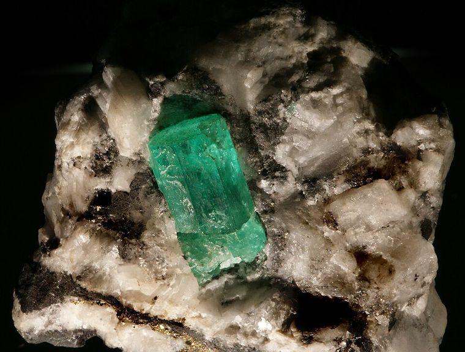</a><figcaption><p class="lbl"><span class="t">(Muzo) Emerald crystal in its matrix</span><span class="a">Photo: Didier Descouens</span><span class="m">CC BY-SA 3.0 · Wikimedia Commons</span></p><p class="why"><b>Why</b> A single green emerald crystal in rough white rock.</p><p class="use"><b>Use</b> The Emerald level: a clear crystal emerging from rough stone, as the verse emerges from effortful recall.</p></figcaption></figure><figure class="card"><a href="https://commons.wikimedia.org/wiki/File:Amethyse_de_Guerrero.jpg" target="_blank" rel="noopener">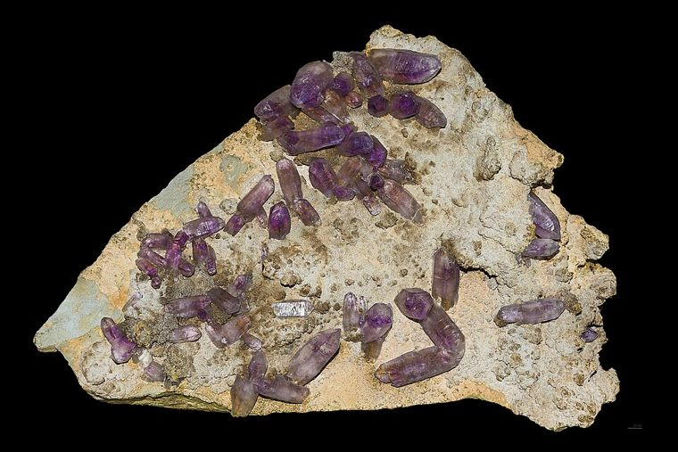</a><figcaption><p class="lbl"><span class="t">Amethyse de Guerrero</span><span class="a">Photo: Didier Descouens</span><span class="m">CC BY-SA 3.0 · Wikimedia Commons</span></p><p class="why"><b>Why</b> Violet amethyst points on pale rock.</p><p class="use"><b>Use</b> The Amethyst level’s color and texture.</p></figcaption></figure><figure class="card"><a href="https://commons.wikimedia.org/wiki/File:Jasper.pebble.600pix.jpg" target="_blank" rel="noopener">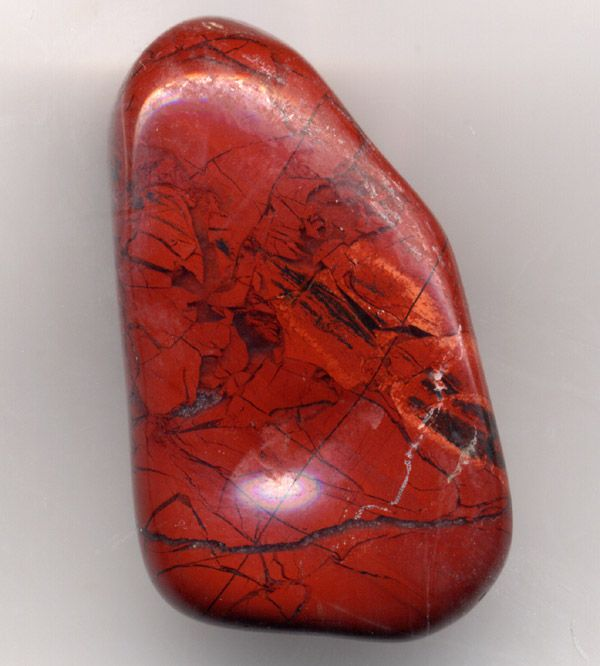</a><figcaption><p class="lbl"><span class="t">Jasper.pebble.600pix</span><span class="a">Photo: Unknown</span><span class="m">Public domain · Wikimedia Commons</span></p><p class="why"><b>Why</b> Red jasper, polished smooth.</p><p class="use"><b>Use</b> Jasper, the top level: a stone polished by long handling. Jasper comes in red and green, so the color is ours to choose.</p></figcaption></figure><figure class="card"><a href="https://commons.wikimedia.org/wiki/File:Quartz,_Tibet.jpg" target="_blank" rel="noopener">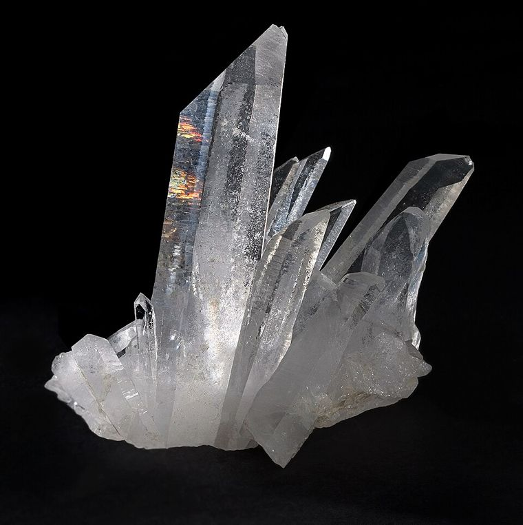</a><figcaption><p class="lbl"><span class="t">Quartz, Tibet</span><span class="a">Photo: JJ Harrison (https://www.jjharrison.com.au/)</span><span class="m">CC BY-SA 2.5 · Wikimedia Commons</span></p><p class="why"><b>Why</b> A cluster of clear quartz crystal.</p><p class="use"><b>Use</b> “Clear as crystal” (Revelation 21:11): the glow and highlights on the Jasper badge.</p></figcaption></figure><figure class="card"><a href="https://commons.wikimedia.org/wiki/File:Amethyst_and_drusy_quartz_cathedrals_in_Crystal_Mountain_Museum.jpg" target="_blank" rel="noopener">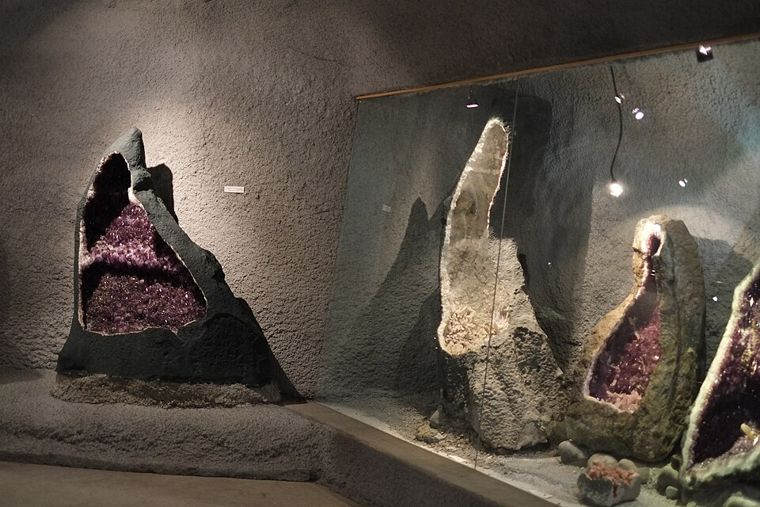</a><figcaption><p class="lbl"><span class="t">Amethyst and drusy quartz cathedrals in Crystal Mountain Museum</span><span class="a">Photo: Pseudopanax at English Wikipedia</span><span class="m">Public domain · Wikimedia Commons</span></p><p class="why"><b>Why</b> Amethyst geodes standing like small chapels in a museum.</p><p class="use"><b>Use</b> The treasury of secured verses, a house built of living stones.</p></figcaption></figure></div></section>
  <section id="references">
    <p class="eyebrow">What I took from the screenshots you sent</p>
    <h2>Your references</h2>
    <div class="exgrid"><article class="ex"><h3>Handhold (white cards on a painted sky)</h3><p><b>What I see.</b> A bold first word, then a muted rest of the sentence (“Guide. Handhold shows what to do…”), on frosted white cards over a painterly landscape.</p><p><b>What we take.</b> Lesson instructions written the same way: “Recall. Say the whole verse from its reference.” The photo behind is the Still Water board, changing with the time of day.</p></article><article class="ex"><h3>QuizWiz (one question per card)</h3><p><b>What I see.</b> One large question per card, a 2×2 grid of answers, a different soft color for each card.</p><p><b>What we take.</b> The meaning questions. The card color can come from the item’s current stone.</p></article><article class="ex"><h3>Meditation login (“How would you like to feel?”)</h3><p><b>What I see.</b> One question, stacked soft buttons, the chosen one warmed to peach, on a painted texture.</p><p><b>What we take.</b> Onboarding and the planner: “What would you like to memorize?” with one choice warmed.</p></article><article class="ex"><h3>Family reflection card</h3><p><b>What I see.</b> Stacked faces, a response count and a date on a quiet card.</p><p><b>What we take.</b> The family prompt (“At dinner tonight, ask together…”), with whose turn it is shown as faces.</p></article></div>
  </section>

  
  <section id="ux">
    <p class="eyebrow">Five products worth borrowing from</p>
    <h2>UX examples</h2>
    <div class="exgrid"><article class="ex"><p class="eyebrow">Living backgrounds</p><h3>Apple Weather</h3><p><b>What it does.</b> The backgrounds come in thousands of variations that follow the sun’s position, cloud and rain where you are, so the screen tells you something before you read a word.</p><p><b>What we take.</b> Let the background follow the time of day: morning mist for new pieces, gold at dusk, a nocturne for the bedtime review. The scene itself says what kind of session this is.</p><p class="src">Sources: <a href="https://9to5mac.com/2021/06/11/ios-15-weather-app-hands-on/" target="_blank" rel="noopener">9to5Mac</a> · <a href="https://www.macrumors.com/guide/ios-15-weather-app" target="_blank" rel="noopener">MacRumors</a></p></article><article class="ex"><p class="eyebrow">Calm generative motion</p><h3>Endel</h3><p><b>What it does.</b> Each soundscape has its own generative visual. The motion is gentle and slow, in a mostly monochrome interface.</p><p><b>What we take.</b> Motion as atmosphere, not decoration. When a verse is read aloud, the water behind it can move with the voice, very slightly.</p><p class="src">Sources: <a href="https://endel.io/" target="_blank" rel="noopener">Endel</a> · <a href="https://screensdesign.com/showcase/endel-focus-sleep-sounds" target="_blank" rel="noopener">Screensdesign</a></p></article><article class="ex"><p class="eyebrow">Calm without penalties</p><h3>Monument Valley</h3><p><b>What it does.</b> No timers, no enemies, no penalties for failure, in a restrained pastel world where nothing is there only to look pretty.</p><p><b>What we take.</b> No timers or lives in lessons. A wrong answer teaches instead of punishing. Every ornament has a job.</p><p class="src">Sources: <a href="https://www.wallpaper.com/tech/monument-valley-at-10-the-story-of-the-most-meticulous-puzzle-game-ever-created" target="_blank" rel="noopener">Wallpaper</a> · <a href="https://invisionapp.com/inside-design/secrets-behind-the-success-of-monument-valley" target="_blank" rel="noopener">InVision</a></p></article><article class="ex"><p class="eyebrow">Layered landscapes and light</p><h3>Alto’s Odyssey</h3><p><b>What it does.</b> A minimal art style made of layered landscapes, with dynamic lighting and weather that change the mood of each place.</p><p><b>What we take.</b> Build backgrounds from flat layers (the woodblock approach) so they can shift with depth and light. Cheap to render, rich to look at.</p><p class="src">Sources: <a href="https://altosodyssey.com/press" target="_blank" rel="noopener">Alto’s Odyssey press</a> · <a href="https://macstories.net/reviews/altos-odyssey-review-desert-tranquility/" target="_blank" rel="noopener">MacStories</a></p></article><article class="ex"><p class="eyebrow">The closest existing app</p><h3>Verses: Bible Memory</h3><p><b>What it does.</b> A progression of six memory games from first exposure to full recall, plus a “memory health” score that prompts a review when it drops.</p><p><b>What we take.</b> The baseline to beat. What we add: levels that require passes on different days, a planner, a family, and a look that feels made for Scripture.</p><p class="src">Sources: <a href="https://apps.apple.com/us/app/id939461663" target="_blank" rel="noopener">App Store</a> · <a href="https://learnofchrist.com/resources/memory-verses" target="_blank" rel="noopener">Learn of Christ review</a></p></article></div>
  </section>

  <section id="game">
    <p class="eyebrow">What levels, gems and points can look like</p>
    <h2>Levels and points</h2>
    <p>The aim is feedback that tells the truth about memory, not confetti. These three show the pieces: gems as objects you earn, medals with weight and a record behind them, and a history that grows.</p>
    <div class="exgrid"><article class="ex"><p class="eyebrow">Gems as earned objects</p><h3>Opal</h3><p><b>What it does.</b> Focus Gems are the heart of the app: rendered 3D gems unlocked at milestones, each with a name, and shareable. Opal says only about 2% of users reach the highest one.</p><p><b>What we take.</b> The closest model for the stone levels: a gem you can turn and look at, rarity told honestly. One user complained that equipping a gem changed nothing visible, so in our app an item’s level should show everywhere that item appears.</p><p class="src">Sources: <a href="https://www.opal.so/features" target="_blank" rel="noopener">Opal features</a> · <a href="https://opal.so/blog/the-milestone-reveal-moment" target="_blank" rel="noopener">Milestone reveal</a> · <a href="https://makeheadway.com/blog/opal-app-review/" target="_blank" rel="noopener">Review</a></p></article><article class="ex"><p class="eyebrow">Medals with weight</p><h3>Apple Fitness awards</h3><p><b>What it does.</b> Awards are medals with distinct shapes and materials, and you can open one full screen and rotate it.</p><p><b>What we take.</b> Each level gets its own cut and stone, not just a color. Tap a badge to turn it in the light and see the date and the three recalls that earned it.</p><p class="src">Sources: <a href="https://www.macrumors.com/2022/07/07/apple-fitness-gains-dedicated-awards-in-ios-16/" target="_blank" rel="noopener">MacRumors</a> · <a href="https://developer.apple.com/forums/thread/706570" target="_blank" rel="noopener">Apple developer forum</a></p></article><article class="ex"><p class="eyebrow">A visible history</p><h3>Forest</h3><p><b>What it does.</b> A tree grows while you focus, and each finished session joins a forest that is your record over time.</p><p><b>What we take.</b> Keep what was earned visible as a growing thing: a window that fills with roundels, a wall of living stones. But skip its punishment (a tree that dies when you leave): for children, loss should never be the motivator. Critics also note people game the streak, which is why our levels need passes on separate days.</p><p class="src">Sources: <a href="https://forestapp.cc/" target="_blank" rel="noopener">Forest</a> · <a href="https://goodux.appcues.com/blog/forests-gamified-focus" target="_blank" rel="noopener">Good UX</a></p></article></div>
  </section>

  
  <section id="questions">
    <p class="eyebrow">For the next round</p>
    <h2>Decisions for you</h2>
    <ol class="qs">
      <li>Do the four time-of-day photos feel right, or should the day follow a different place, such as a single lake through the day?</li>
      <li>Is Jasper red or green? The museum ring on the first edition was green jasper; the photo here is red.</li>
      <li>Should the next step be the full app design (screens in this look), or the working app?</li>
    </ol>
  </section>
</main>
<footer class="wrap"><p>Photographs: Wikimedia Commons contributors, each credited under its image with its license (CC BY, CC BY-SA or public domain). Tap any photo to open its file page. The first, painting edition of these boards is kept in the project repository.</p></footer>
